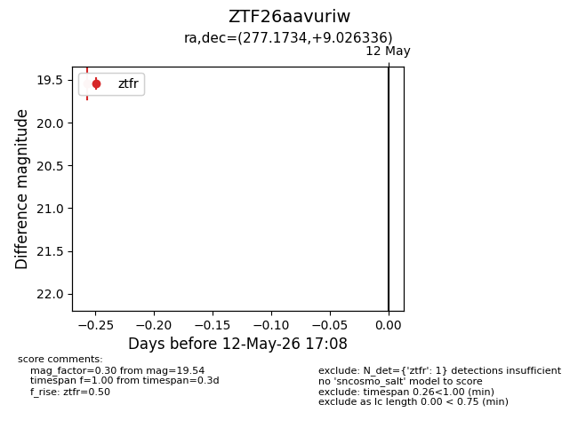
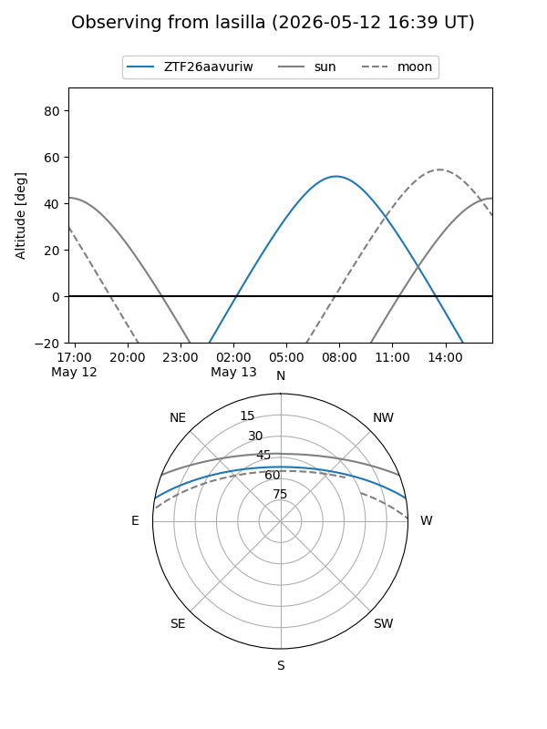
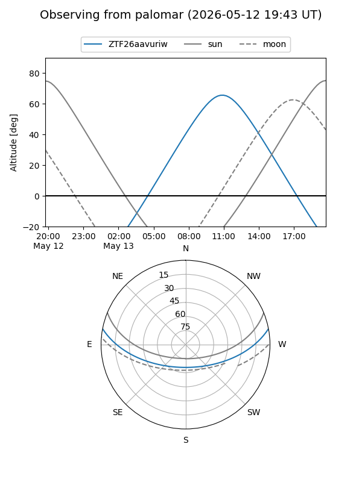

ZTF26aavuriw
Target ZTF26aavuriw at 2026-05-12 17:11
Aliases and brokers:
FINK: link
Lasair: link
ALeRCE: link
alt names
ZTF26aavuriw (ztf,fink_ztf)
Coordinates:
equatorial (ra, dec) = 277.1734,+9.02634
equatorial (HMS+DMS) = 18:28:41.63,+09:01:34.81
galactic (l, b) = (38.4540,+9.12705)
Flags:
Photometry:
last ztfr=19.54
1 ztfr detections
Lightcurve

Visibility


Additional plots